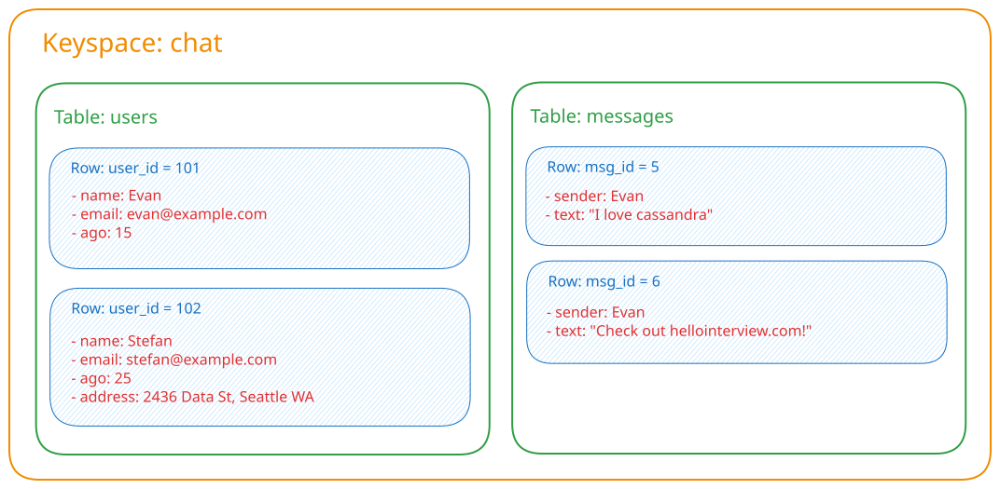
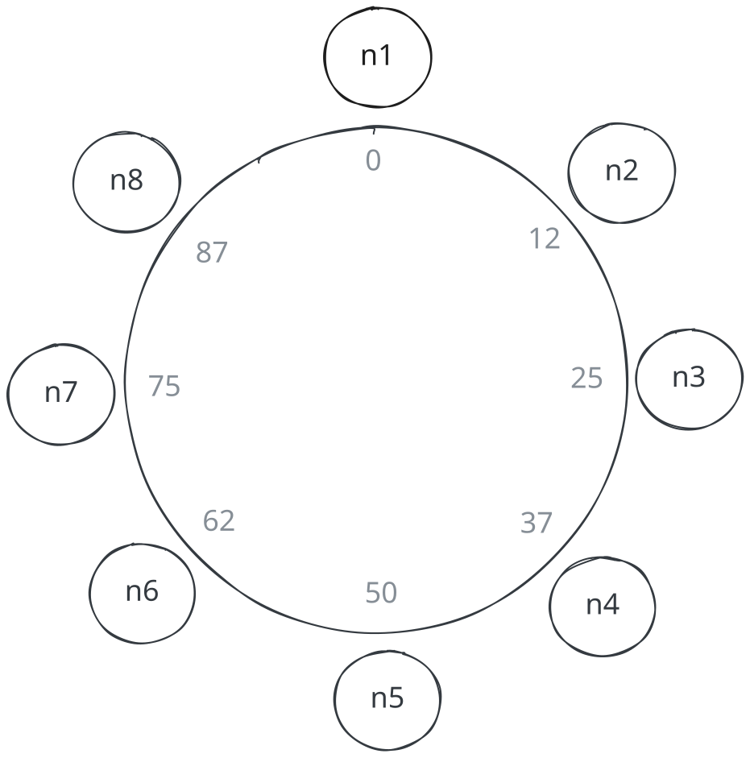
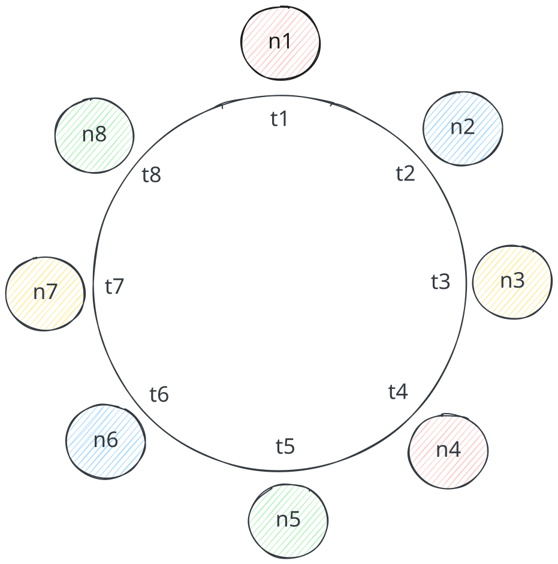
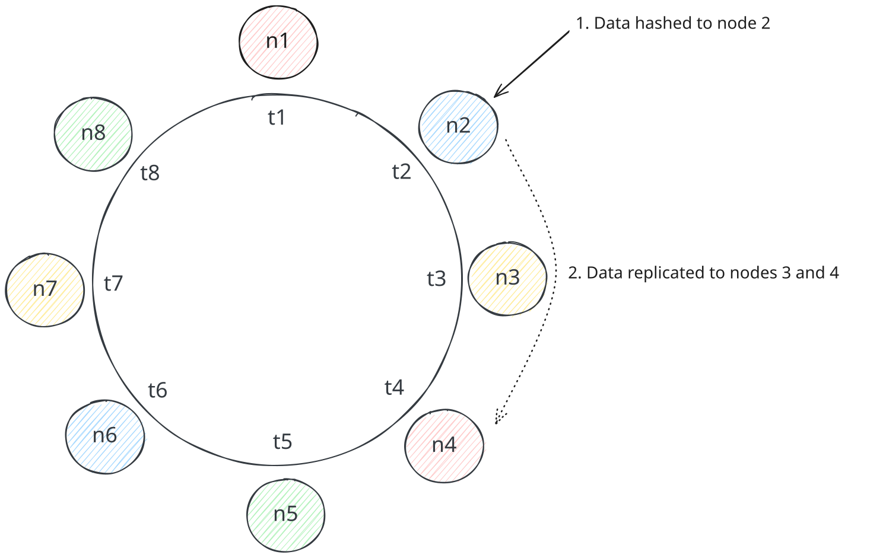
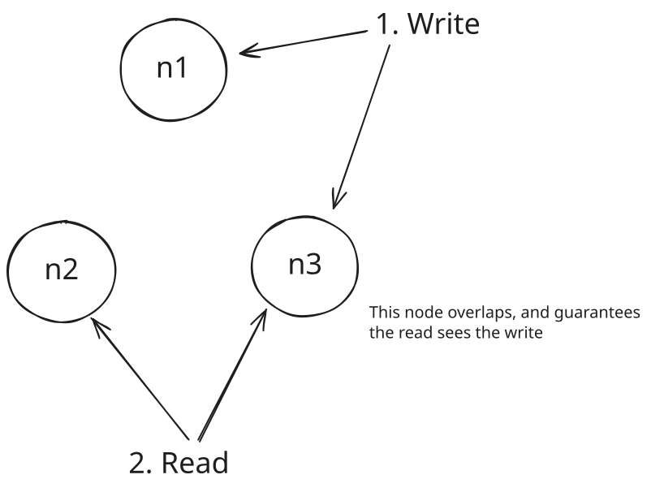
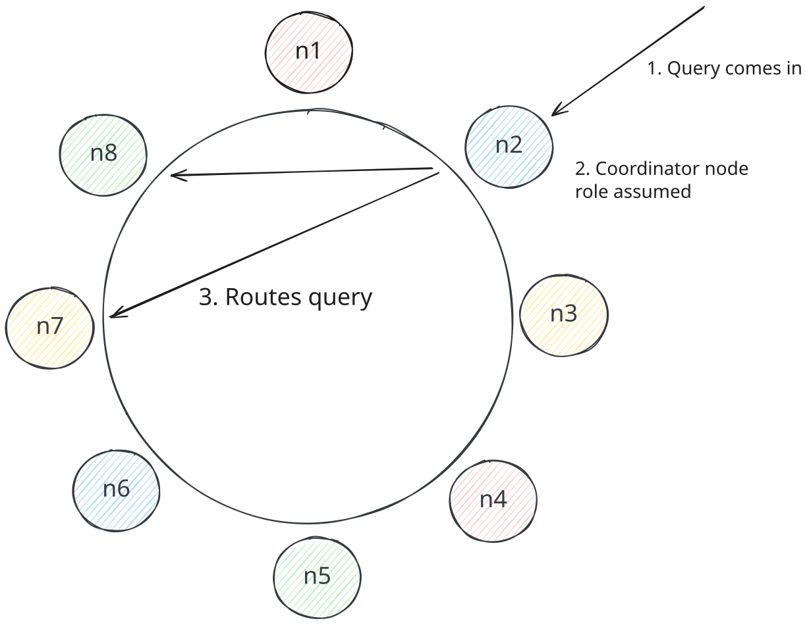
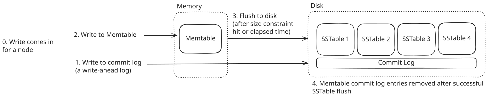
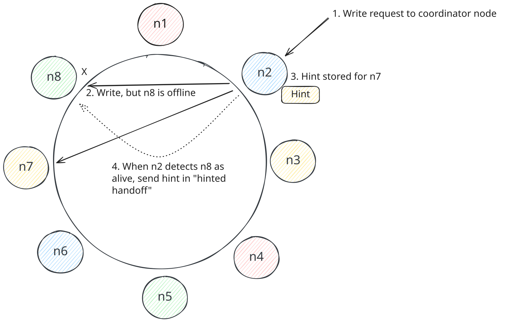
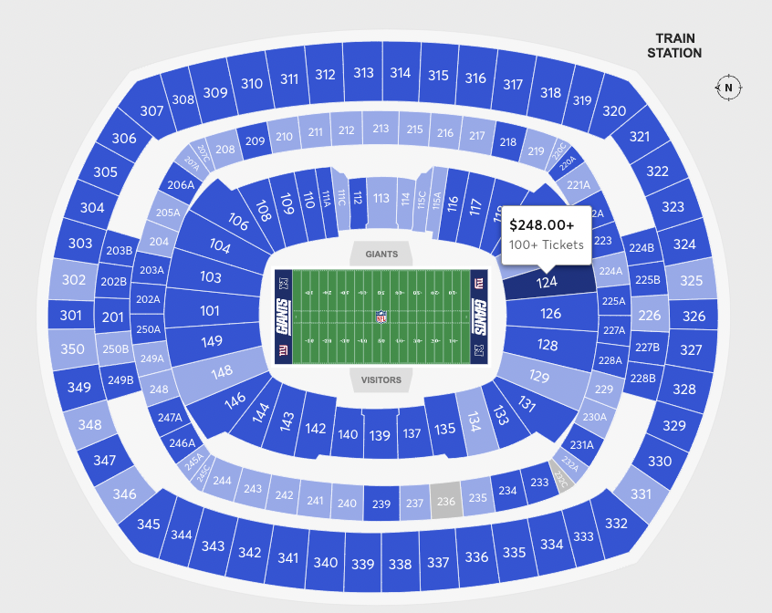
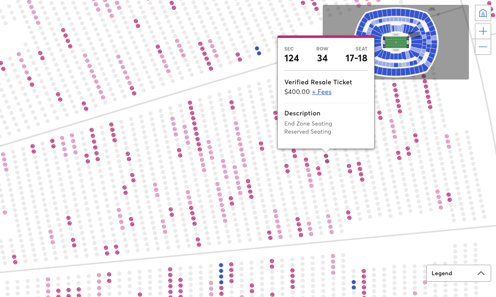

Key Technologies
Cassandra
Learn about how you can use Cassandra to solve a large number of problems in System Design.
Databases are a fundamental and core aspect of system design, and one of the most versatile / popular databases to have in your toolbox is Cassandra. Cassandra was originally built by Facebook to support its rapidly scaling inbox search feature. Since then, Cassandra has been adopted by countless companies to rapidly scale data storage, throughput, and readback. From Discord (explored later in this post), to Netflix, to Apple, to Bloomberg, Cassandra is a NoSQL database that is here to stay, used by a wide array of firms for a large set of use-cases.
Apache Cassandra is an open-source, distributed NoSQL database. It implements a partitioned wide-column storage model with eventually consistent semantics. It is a distributed database that runs in a cluster and can horizontally scale via commodity hardware. It combines elements of Dynamo (see our write-up on DynamoDB) and Bigtable to handle massive data footprints, query volume, and flexible storage requirements.
In this deep dive, we'll break down the features of Cassandra that make it attractive as a database, especially for system design. We'll discuss the most important internals of Cassandra to demystify how it provides said features. Finally, we'll discuss when and how to use Cassandra. Let's go!
Cassandra Basics
Let's start by understanding a bit about the basics.
Data Model
Cassandra has a set of basic data definitions that define how you store and interact with data.
- Keyspace - The top-level organizational unit in Cassandra, equivalent to a "database" in relational systems like Postgres or MySQL. A keyspace defines replication strategies (discussed later) for managing data redundancy and availability. It also owns any user-defined-types (UDTs) you might create.
- Table - Lives within a keyspace and organizes data into rows. Each table has a schema that defines its columns and primary key structure.
- Row - A single record in a table, identified by a primary key. Each row stores values across multiple columns.
- Column - The actual data storage unit. A column has a name, a type, and a value for that specific row. Not all columns need to be specified per row in a Cassandra table. Cassandra is a wide-column database so the specified columns can vary per row in a table, making Cassandra more flexible than something like a relational database, which requires an entry for every column per row (even if that entry is NULL). Additionally, every column has timestamp metadata associated with it, denoting when it was written. When a column has a write conflict between replicas, it is resolved via "last write wins".

Cassandra Data Model
At the most basic level, you can liken Cassandra's data structures to a large JSON.
{
"keyspace1": {
"table1": {
"row1": {
"col1": 1,
"col2": "2"
},
"row2": {
"col1": 10,
"col3": 3.0
},
"row3": {
"col4": {
"company": "Hello Interview",
"city": "Seattle",
"state": "WA"
}
}
}
}
}Cassandra columns support a plethora of types, including user-defined types and JSON values. This makes Cassandra very flexible as a data store for both flat and nested data.
Primary Key
One of the most important constructs in Cassandra is the "primary key" of a table. Every row is represented uniquely by a primary key. A primary key consists of one or more partition keys and may include clustering keys. Let's break down what these terms mean.
- Partition Key - One or more columns that are used to determine what partition the row is in. We'll discuss partitioning of data later in this deep-dive.
- Clustering Key - Zero or more columns that are used to determine the sorted order of rows in a table. Data ordering is important depending on one's data modeling needs, so Cassandra gives users control over this via the clustering keys.
When you create a table in Cassandra via the Cassandra Query Language (CQL) dialect, you specify the primary key as part of defining the schema. Below are a few examples of different primary keys with comments inlined:
-- Primary key with partition key a, no clustering keys
CREATE TABLE t (a text, b text, c text, PRIMARY KEY (a));
-- Primary key with partition key a, clustering key b ascending
CREATE TABLE t (a text, b text, c text PRIMARY KEY ((a), b))
WITH CLUSTERING ORDER BY (b ASC);
-- Primary key with composite partition key a + b, clustering key c
CREATE TABLE t (a text, b text, c text, d text, PRIMARY KEY ((a, b), c));
-- Primary key with partition key a, clustering keys b + c
CREATE TABLE t (a text, b text, c text, d text, PRIMARY KEY ((a), b, c));
-- Primary key with partition key a, clustering keys b + c (alternative syntax)
CREATE TABLE t (a text, b text, c text, d text, PRIMARY KEY (a, b, c));The primary key concept and its subcomponents might remind you of DynamoDB's primary key definition. This concept is basically shared 1:1 between the 2 databases.
Key Concepts
When introducing Cassandra in a system design interview, you're going to want to know more than just how to use it. You'll want to be able to explain how it works in case your interviewer asks pointed questions, or you might want to deep dive into data storage specifics, scalability, query efficiency, etc., all of which deeply affect your design. In this section, we dive into the essential details of Cassandra to give you this context.
Partitioning
One of the most fundamental aspects of Cassandra is its partitioning scheme for data. Cassandra's partitioning techniques are extremely robust and worth understanding generally for system design in case you want to employ them in other areas of your designs (caching, load balancing, etc.).
Cassandra achieves horizontal scalability by partitioning data across many nodes in its cluster. In order to partition data successfully, Cassandra makes use of consistent hashing. Consistent hashing is a fundamental technique used in distributed systems to partition data / load across machines in a way that prioritizes evenness of distribution while minimizing re-mapping of data if a node enters or leaves the system.
In a traditional hashing scheme, a number of nodes is chosen and a node is determined to store a value based on the following calculation: hash(value) % num_nodes. This certainly allocates values to nodes, but there's 2 problems:
- If the number of buckets changes (node added or removed), then a lot of values will be assigned new nodes. In a distributed system like a database, this would mean that data would have to move between nodes in excess.
- If you're unlucky with your hashing scheme, there might be a lot of values that get hashed to the same node, resulting in uneven load between nodes.
To improve on this design, consistent hashing prefers a different approach.
Rather than hashing a value and running a modulo to select a node, consistent hashing hashes a value to a range of integers that are visualized on a ring. This ring has nodes mapping to specific values. When a value is hashed, it is hashed to an integer. The ring is then walked clockwise to find the first value corresponding to a node. The value is then stored on that node.

This design prevents excess re-mapping of values if a node enters or leaves the system because it will affect one adjacent node. If a node enters, it re-maps some values from the node ahead of it when moving clockwise on the ring. If a node exits, values from the node exiting re-map to the node ahead of it when moving clockwise on the ring.
However, this design doesn't address the issue of uneven load between nodes. To address this, Cassandra opts to map multiple nodes on the ring to physical nodes in the distributed system. The nodes on the ring are called vnodes (a.k.a. virtual nodes) are owned by physical nodes. This distributes load over the cluster more evenly. It also allows for the system to take advantage of the resources of different physical nodes; some physical nodes might be bigger machines with more resources, so they can be responsible for more vnodes. Below is how the cluster might look, with values, called "tokens" (t1, t2, etc.), represented on the ring, vnodes mapped to those tokens, and different physical nodes represented by the colors of the vnodes.

Replication
In Cassandra, partitions of data are replicated to nodes on the ring, enabling it to skew extremely available for system designs that rely on that feature. Keyspaces have replication configurations specified and this affects the way Cassandra replicates data.
At a high level, Cassandra chooses what nodes to replicate data to by scanning clockwise from the vnode that corresponds to hashed value in a consistent hashing scheme. For example, if Cassandra is trying to replicate data to 3 nodes, it will hash a value to a node and scan clockwise to find 2 additional vnodes to serve as replicas. Cassandra skips any vnodes that are on the same physical node as vnodes already in the replica set so that several replicas aren't down when a single physical node goes down.

Replication
Cassandra has two different "replication strategies" it can employ: NetworkTopologyStrategy and SimpleStrategy.
NetworkTopologyStrategy is the strategy recommended for production and is data center / rack aware so that data replicas are stored across potentially many data centers in case of an outage. It also allows for replicas to be stored on distinct racks in case a rack in a data center goes down. The main goal with this configuration is to establish enough physical separate of replicas to avoid many replicas being affected by a real world outage / incident.
SimpleStrategy is a simpler strategy, merely determining replicas via scanning clockwise (this is the one we discussed above). It is useful for simple deployments and testing.
Below is Cassandra CQL for specifying different replication strategy configurations for a keyspace:
-- 3 replicas
ALTER KEYSPACE hello_interview WITH REPLICATION = { 'class' : 'SimpleStrategy', 'replication_factor' : 3 };
-- 3 replicas in data center 1, 2 replicas in data center 2
ALTER KEYSPACE hello_interview WITH REPLICATION = {'class' : 'NetworkTopologyStrategy', 'dc1' : 3, 'dc2' : 2};Consistency
Like any distributed system, Cassandra is subject to the CAP Theorem. Cassandra gives users flexibility over consistency settings for reads / writes, which allows Cassandra users to "tune" their consistency vs. availability trade-off. Given that every system design involves some degree of CAP theorem analysis / trade-off, it's important to understand the levers you have to pull with Cassandra.
Cassandra does not offer transaction support or any notion of ACID gurantees. It only supports atomic and isolated writes at the row level in a partition, but that's about it. You can read more about this here.
Cassandra allows you to choose from a list of "consistency levels" for reads and writes, which are required node response numbers for a write or a read to succeed. These enforce different consistency vs. availability behavior depending on the combination used. These range from ONE, where a single replica needs to respond, to ALL, where all replicas must respond. You can read more about the different consistency levels here.
One notable consistency level to understand is QUORUM. QUORUM requires a majority (n/2 + 1) of replicas to respond. Applying QUORUM to both reads and writes guarantees that writes are visible to reads because at least one overlapping node is guaranteed to participate in both a write and a read. To illustrate this, let's assume a set of 3 nodes. 3/2 + 1 = 2, so 2 of 3 nodes need to be written to and read from in order for writes and reads to succeed. This means that a write will always be seen by a read because at least 1 of those 2 nodes will have also seen the write.

Typically, Cassandra aims for "eventual consistency" for all consistency levels, where all replicas have the latest data assuming enough time passes.
Query Routing
Any Cassandra node can service a query from the client application because all nodes in Cassandra can assume the role of a query "coordinator". Nodes in Cassandra each know about other alive nodes in the cluster. They share cluster information via a protocol called "gossip" (discussed later). Nodes in Cassandra also are able to determine where data lives in the cluster via performing consistent hashing calculations and by knowing the replication strategy / consistency level configured for the data. When a client issues a query, it selects a node who becomes the coordinator, and the coordinator issues queries to nodes that store the data (a series of replicas).

Query Routing
Storage Model
Cassandra's storage model is important to understand because it is core to one of its strengths for system design: write throughput. Cassandra leverages a data structure called a Log Structured Merge Tree (LSM tree) index to achieve this speed. The LSM tree is used in place of a B-tree, which is the index of choice for most databases (relational DBs, DynamoDB).
Before diving into the details, it's important to clarify how Cassandra handles writes vs. other databases. Cassandra opts for an approach that favors write speed over read speed. Every create / update / delete is a new entry (with some exceptions). Cassandra uses the ordering of these updates to determine the "state" of a row. For example, if a row is created and then it is updated later, Cassandra will understand the state of the row by looking at the creation and then the update vs. looking at just a single row. The same goes for deletes, which can be thought of as "removal updates". Cassandra writes a "tombstone" entry for row deletions. The LSM tree enables Cassandra to efficiently understand the state of a row, while writing data to the database as almost entirely "append on" writes.
The 3 constructs core to the LSM tree index are:
- Commit Log - This basically is a write-ahead-log to ensure durability of writes for Cassandra nodes.
- Memtable - An in-memory, sorted data structure that stores write data. It is sorted by primary key of each row.
- SSTable - A.k.a. "Sorted String Table." Immutable file on disk containing data that was flushed from a previous Memtable.
With all these constructs working together, writes look like this:
- A write is issued for a node.
- That write is written to the commit log so it doesn't get lost if the node goes down while the write is being processed or if the data is only in the Memtable when the node goes down.
- The write is written to the Memtable.
- Eventually, the Memtable is flushed to disk as an immutable SSTable after some threshold size is hit or some period of time elapses.
- When a Memtable is flushed, any commit log messages are removed that correspond to that Memtable, to save space. These are superfluous now that the Memtable is on disk as an SSTable that is immutable.
The below diagram illustrates the above steps:

Storage Model
To summarize, a Memtable houses recent writes, consolidating writes for a keys into a single row, and is occasionally flushed to disk as an immutable SSTable. A commit log serves as a write-ahead-log to ensure data isn't lost if it is only in the Memtable and the node goes down.
When reading data for a particular key, Cassandra reads the Memtable first, which will have the latest data. If the Memtable does not have the data for the key, Cassandra leverages a bloom filter to determine which SSTables on disk might have the data. It then reads the SSTables in order from newest to oldest to find the latest data for the row. The data in SSTables is sorted by primary key, making it easy to find a particular key.
Building on the above foundation, there's 2 additional concepts to internalize:
- Compaction - To prevent bloat of SSTables with many row updates / deletions, Cassandra will run compaction to consolidate data into a smaller set of SSTables, which reflect the consolidated state of data. Compaction also removes rows that were deleted, removing the tombstones that were previously present for that row. This process is particularly efficient because all of these tables are sorted.
- SSTable Indexing - Cassandra stores files that point to byte offsets in SSTable files to enable faster retrieval of data on-disk. For example, Cassandra might map a key of 12 to a byte offset of 984, meaning the data for key 12 is found at that offset in the SSTable. This is somewhat similar to how a B-tree might point to data on disk.
To read more about LSM trees, check out this article.
Gossip
Cassandra nodes communicate information throughout the cluster via "gossip", which is a peer-to-peer scheme for distributing information between nodes. Universal knowledge of the cluster makes every node aware and able to participate in all operations of the database, eliminating any single points of failure and allowing Cassandra to be a very reliable database for availability-skewing system designs. How does this work?
Nodes track various information about the cluster, such as what nodes are alive / accessible, what the schema is, etc. They manage generation and version numbers for each node they know about. The generation is a timestamp when the node was bootstrapped. The version is a logical clock value that increments every ~second. Across the cluster, these values form a vector clock. This vector clock allows nodes to ignore old cluster state information when it's received via gossip.
Cassandra nodes routinely pick other nodes to gossip with, with a probabilistic bias towards "seed" nodes. Seed nodes are designated by Cassandra to bootstrap the cluster and serve as guaranteed "hotspots" for gossip so all nodes are communicating across the cluster. By creating these "choke points," Cassandra eliminates the possibility that sub-clusters of nodes emerge because information happens to not reach the entire cluster. Cassandra ensures that seed nodes are always discoverable via off-the-shelf service discovery mechanisms.
Fault Tolerance
In a distributed system like Cassandra, nodes fail, and Cassandra must efficiently detect and handle failures to ensure the database can write and read data efficiently. How is it able to achieve these requirements at scale?
Cassandra leverages a Phi Accrual Failure Detector technique to detect failure during gossip; each node independently makes a decision on whether a node is available or not. When a node gossips with a node that doesn't respond, Cassandra's failure detection logic "convicts" that node and stops routing writes to it. The convicted node can re-enter the cluster when it starts heartbeating again. Cassandra will never consider a node truly "down" unless the Cassandra system administrator decommissions the node or rebuilds it. This is done to prevent intermittent communication failures / node restarts from causing the cluster to re-balance data.
In the presence of write attempts to nodes that are considered "offline", Cassandra leverages a technique called "hinted handoffs." When a node is considered offline by a coordinator node attempting to write to it, the coordinator temporarily stores the write data in order for the write to proceed. This temporary data is called a "hint." When the offline node is detected as online, the node (or nodes) with a hint sends that data to the previously-offline node. Below is how this looks in practice.

Fault Tolerance
Hinted handoffs are mostly used as a short term way to prevent a node that is offline from losing writes. Any node that is offline for a long time will either be rebuilt or undergo read repairs, as hints usually have a short lifespan.
How to use Cassandra
Data Modeling
When leveraging Cassandra in a system design, modeling your data to take advantage of its architecture and strengths is very important.
If you come from a relational database world, Cassandra data modeling might feel a bit odd at first. Relational data modeling focuses on "normalized" data, where you have a one copy of each entity instance and you manage relationships between these entities via foreign keys and JOIN-tables. In short, modeling data for a relational database is entity-relationship-driven. However, Cassandra doesn't have a concept of foreign keys / referential integrity, JOINs, etc. Cassandra also doesn't favor normalization of data. Instead, data modeling for Cassandra is query-driven.
Cassandra's query efficiency is heavily tied to the way that data is stored. Cassandra also lacks the query flexibility of relational databases. It doesn't support JOINs and services single table queries. Therefore, when considering how to model the data of a Cassandra database, the "access patterns" of the application must be considered first and foremost. It also is important to understand what data is needed in each table, so that data can be "denormalized" (duplicated) across tables as necessary. The main areas to consider are:
- Partition Key - What data determines the partition that the data is on.
- Partition Size - How big a partition is in the most extreme case, whether partitions have the capacity to grow indefinitely, etc.
- Clustering Key - How the data should be sorted (if at all).
- Data Denormalization - Whether certain data needs to be denormalized across tables to support the app's queries.
To drive home this point, it's helpful to go through some examples.
Example: Discord Messages
One of the best way to learn to use a tool like Cassandra is through a real-world example like Discord. Discord has shared a good summary of their use of Cassandra to store message data via blog posts, and it's a good model for how one might approach message storage for chat apps generally.
Discord channels can be quite busy with messages. Users typically query recent data given the fact that a channel is basically a big group chat. Users might query recent data and scroll a little bit, so having the data sorted in reverse chronological order makes sense.
To service the above needs, Discord originally opted to create a messages table with the following schema:
CREATE TABLE messages (
channel_id bigint,
message_id bigint,
author_id bigint,
content text,
PRIMARY KEY (channel_id, message_id)
) WITH CLUSTERING ORDER BY (message_id DESC);You might wonder why message_id is used instead of a timestamp column like created_at? Discord opted to eliminate the possibility of Cassandra primary key conflicts by assigning messages Snowflake IDs. A Snowflake ID is basically a chronologically sortable UUID. This is preferable to created_at because a Snowflake ID collision is impossible (it's a UUID), wheras a timestamp, even with millisecond granularity, has a likelihood of collision.
The above schema enables Cassandra to service messages for a channel via a single partition. The partition key, channel_id, ensures that a single partition is responsible for servicing the query, preventing the need to do a "scatter-gather" query across several nodes to get message data for a channel, which could be slow / resource intensive.
The above schema didn't fully meet Discord's needs, however. Some Discord channels can sometimes have an extremely high volume of messages. With the above schema, Discord noticed that Cassandra was struggling to handle large partitions corresponding to busy Discord channels. Large partitions in Cassandra typically hit performance problems, and this was exactly what Discord observed. Additionally, Discord channels can perpetually grow in size with message activity, and would eventually hit performance problems if they lived long enough. A modification to the schema was necessary.
To solve the large partition problem, Discord introduced the concept of a bucket and add it to the partition key part of the Cassandra primary key. A bucket represented 10 days of data, defined by a fixed window aligned to Discord's self-defined DISCORD_EPOCH of January 1, 2015. The messages of even the most busy Discord channels over 10 days would certainly fit in a partition in Cassandra. This also solved the issue of partitions growing monotonically; over time, a new partition would be introduced because a new bucket would be created. Finally, Discord could query a single partition to service writes most of the time, because the most recent messages of a channel would usually be in one bucket. The only time they weren't is when 1) a new bucket was created based on time passing, or 2) for inactive Discords, which were the significant minority of queries to the messages Cassandra table.
The revised schema looks like this:
CREATE TABLE messages (
channel_id bigint,
bucket int,
message_id bigint,
author_id bigint,
content text,
PRIMARY KEY ((channel_id, bucket), message_id)
) WITH CLUSTERING ORDER BY (message_id DESC);Notably, Discord used its channel access patterns to dictate its schema design, a great example of query-driven data modeling. Their choice of their primary key, including both partition key and clustering key components, is strongly linked to how data is accessed for their app. Finally, they had to think about partition size when designing the schema. All these factors go into building a good Cassandra schema for system design generally.
Example: Ticketmaster
Let's consider another example use-case for Cassandra: Ticketmaster's ticket browsing UI. This is the UI that shows an event venue's available seats, and allows a user to select seats and then enter a seat checkout and payment flow.
The Ticketmaster ticket browsing UI is a UI that doesn't need strict consistency. Event ticket availability changes, even as a user is viewing the UI. If a seat is selected and a purchase flow is attempted, the system can check a consistent database to determine if the seat is actually available. Additionally, always showing the browsing UI is important, as a majority of users will browse, but a minority of users will actually enter a checkout flow.
This example aims to be simple and focused on data modeling, so we gloss over the complexities that ridiculously popular events impose on the system (dubbed, "The Taylor Swift Problem").
When considering how to model our data to support a ticket browsing UI, we might consider every seat in of an event a "ticket." If we think about the access patterns of our system, we uncover that users will query data for a single event at a time, and want to see totals of available seats and also the seats themselves. Users don't care about seeing the seats in any order, since they will have an event venue map that dictates how they see seat availability. Our first iteration of the schema might look like this:
CREATE TABLE tickets (
event_id bigint,
seat_id bigint,
price bigint,
-- seat_id is added as a clustering key to ensure primary key uniqueness; order
-- doesn't matter for the app access patterns
PRIMARY KEY (event_id, seat_id)
);With the above schema, the app can query a single partition to service queries about the event, given that the primary key has a partition key of event_id. The app can query the partition for price information about the event, for ticket availability totals, etc.
This schema has problems, however. For events this 10,000+ tickets, the database needs to perform work to summarize information based on the user's query (price total, ticket total). Additionally, this work might be performed a lot for events that are very popular and have users frequently entering the ticket browsing UI. How might we resolve these problems?
One of the hints for how we might improve our schema lies within the Ticketmaster ticket browsing UI user experience (UX). Consider the UX when a user starts browsing tickets. They see a venue map with sections. Each section might have a popover with high-level information about the ticket availability / price information for that section.

If a user clicks into a section of interest, Ticketmaster's UI then shows the individual seats and ticket information.

This UX unveils that we can add the concept of section_id to our tickets table, and have the section_id as part of the partition key. This means the tickets table now services the query to view individual seat tickets for a given section. The new schema looks like this:
CREATE TABLE tickets (
event_id bigint,
section_id bigint,
seat_id bigint,
price bigint,
PRIMARY KEY ((event_id, section_id), seat_id)
);The above schema is an improvement on our original schema. The schema distributes an event over several nodes in the Cassandra cluster, because each section of an event is in a different partition. It also means each partition is responsible for serving less data, because the number of tickets in a partition is lower. Finally, this schema better maps to the data needs / access patterns of the Ticketmaster ticket browsing UI.
You might ask: how do we now show ticket data for the entire event? To service the UI that shows all sections and high-level information about ticket availability / price, we can consider a separate table event_sections.
CREATE TABLE event_sections (
event_id bigint,
section_id bigint,
num_tickets bigint,
price_floor bigint,
-- section_id is added as a clustering key to ensure primary key uniqueness; order
-- doesn't matter for the app access patterns
PRIMARY KEY (event_id, section_id)
);The above table represents the idea of "denormalizing" data in Cassandra. Rather than having our database do an aggregation on a table or query multiple tables / partitions to service an app, it's preferable to denormalize information like ticket numbers and a price floor in a section to make the access pattern for the app efficient. Additionally, the section stats being queried don't need to be extremely precise - there's tolerance eventual consistency. In fact, Ticketmaster doesn't even show exact ticket numbers in their UI, they merely show a total such as 100+.
The above table is partitioned by event_id. Cassandra will be responsible for querying many sections in one query, but events have a low number of sections (usually < 100) and this query will be served off a single partition. This means that Cassandra can efficiently query data to show the top-level venue view.
Generally, the above represents how an application's access patterns and UX have a heavy influence on how data is modeled in Cassandra.
Advanced Features
Beyond the fundamental use-cases of Cassandra, it's worthwhile to be aware of some of the advanced features at your disposal. Below is a shortlist of some of the major ones.
- Storage Attached Indexes (SAI) - SAIs are a newer feature in Cassandra that offer global secondary indexes on columns. They offer flexible querying of data with performance that is worse than traditional querying based off partition key, but is still good. These enable Cassandra users to avoid excess denormalizing of data if there's query patterns that are less frequent. Lower frequency queries typically don't warrant the overhead of a separate, denormalized table for data. You can read more about them here.
- Materialized Views - Materialized views are a way for a user to configure Cassandra to materialize tables based off a source table. They are have some overlap with SQL views, except they actually "materialize" a table, hence their name. This is convenient because as a user, you can get Cassandra to denormalize data automatically for you. This cuts complexity at your application level, as you don't need to author your application to write to multiple tables if data that is denormalized changes. You can read more about materialized views here.
- Search Indexing - Cassandra can be wired up to a distributed search engine such as ElasticSearch or Apache Solr via different plugins. One example is the Stratio Lucene Index. You can read more about it here.
Cassandra in an Interview
When to use it
Cassandra can be an awesome choice for systems that play to its strengths. Cassandra is a great choice in systems that prioritize availability over consistency and have high scalability needs. Cassandra can perform fast writes and reads at scale, but Cassandra is an especially good choice for systems with high write throughput, given its write-optimized storage layer based on LSM tree indexing. Additionally, Cassandra's wide-column design makes it a great choice as a database for flexible schemas or schemas that involve many columns that might be sparse. Finally, Cassandra succeeds when you have several clear access patterns for an application or use-case that the schema can revolve around.
Knowing its limitations
Cassandra isn't a great database choice for every system. Cassandra isn't good for designs that prioritize strict consistency, given it's heavy bias towards availability. Cassandra also isn't a good choice for systems that require advanced query patterns, such as multi-table JOINs, adhoc aggregations, etc.
Summary
Hopefully now you can see why Cassandra is a very versatile piece of technology for distributed systems. It has a great set of features, but isn't necessarily the database of choice for every system. When leveraging it, it's important to adopt a query-driven data modeling approach to maximize the value Cassandra delivers in terms of write/speeds and scalability. When digging into the details of a system design, having knowledge of Cassandra's internals plays a key role in your ability to use the database properly.
Test Your Knowledge
Answer the question below to find your gaps.
Question 1 of 15
What is Apache Cassandra?
1
A distributed NoSQL database with eventual consistency
2
A message queue system for real-time communication
3
A columnar database for analytics workloads
4
A relational database with ACID transactions and SQL compliance